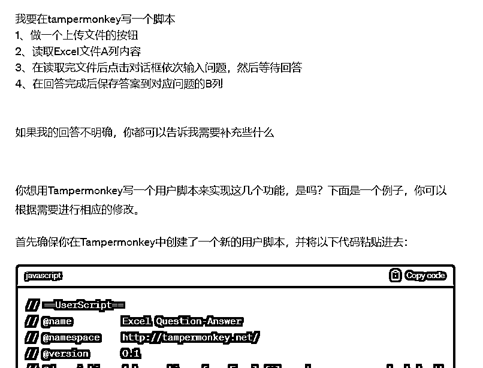
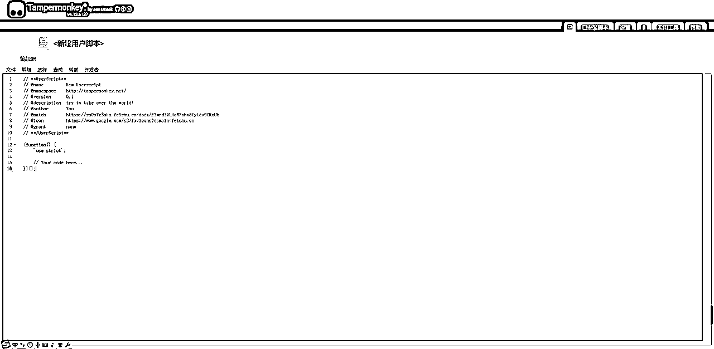
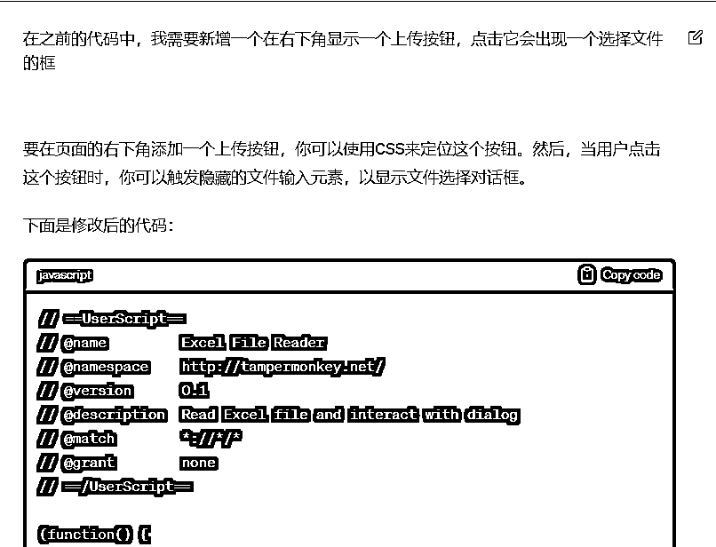
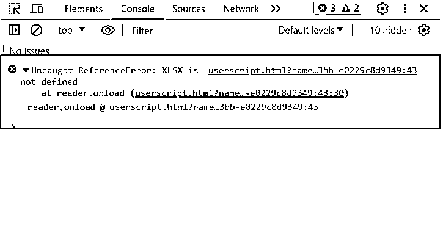
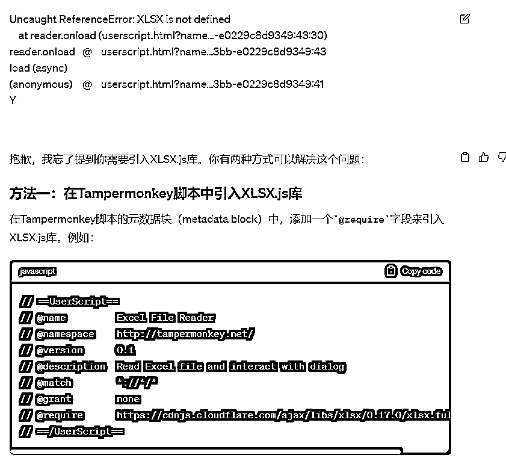
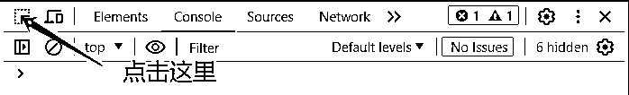
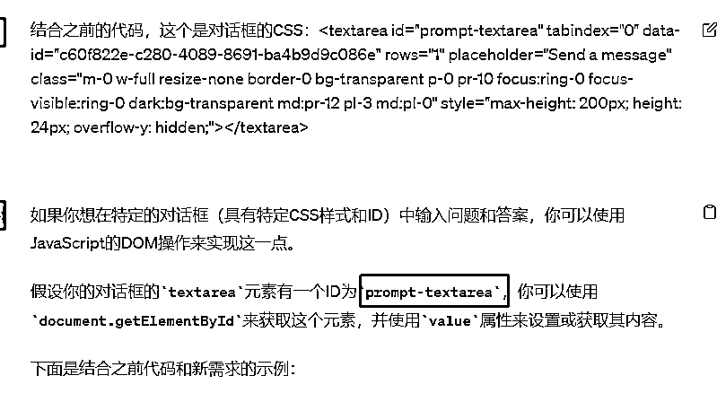
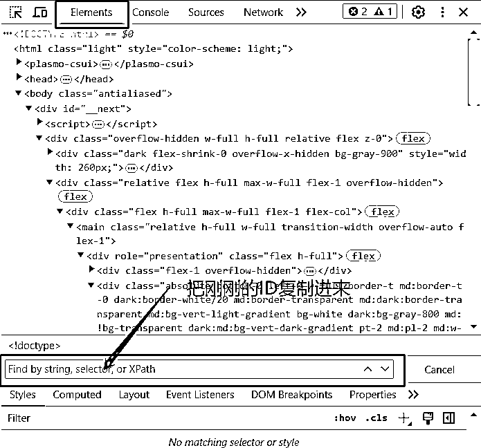
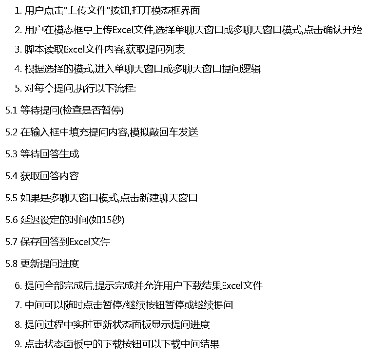

来源：https://sm0o7z3mka.feishu.cn/docx/E3wrd3QLHoW7ohx5Iy1cv9CRnUh
大家好，我是十九，第一次分享有点小紧张，
看到有圈友分享了用GPT写爬虫，
我也来分享一个之前用GPT写的在tampermonkey运行的GPT批量提问脚本（ ）
首先感谢一下这两位圈友的分享文章@渣渣浩@梨云
起因是在用渣渣浩分享的RPA写手机器人时会占用电脑
就想着有什么有什么办法可以解放电脑
直到看到梨云姐用GPT写的脚本
就去问了一下GPT，脚本会不会用不了鼠标之类的
才有了之后慢慢捣鼓出来的脚本
话不多说开始正题
以下是刚提到的两篇文章
《全自动，真批量——ChatGPT超级写手机器人1.0》@渣渣浩
https://wx.zsxq.com/dweb2/index/topic_detail/181458258555812
《如何用GPT开发插件脚本，批量爬取小红书笔记，提升内容创作效率》@梨云
https://articles.zsxq.com/id_zbf7txfxll3i.html
因为用过写手机器人所以先让他简单的写出一个运行框架

这个简单的框架肯定是用不了的
可以先去tampermonkey先把这代码复制进去这里试一下（里面的先全部删掉）

然后你就会发现点击上传的按钮没有显示在页面
对话框输入的位置页面CSS代码没有捕捉到，他不知道在哪输入
所以一步一步来先让他增加一个按钮（目前代码还短所以他能全部写出来，后面可以让他写出上下文方便我们寻找）

把修改后的代码复制进去就会出现一个按钮
点击上传文件选择文件后出现报错
因为这里少了一个引入XLSX.js库所以在上传文件后会出现报错
可以在浏览器按F12或者右键查看网页源代码
把报错的内容直接复制给GPT他就会修改


因为需要点击对话框后输入内容
所以要先寻找输入对话框的CSS位置
在浏览器按F12或者右键查看网页源代码




判断什么时候保存答案或者点击继续按钮也是一样，
找到这个两个按钮的CSS一起复制给GPT让写出判断后进行什么样的动作
点击按钮还是保存

首先给出你想要的需求给GPT（如果你的需求够准确那修改的地方就少），测试GPT给的代码有什么报错或者差点什么需要增加，多看网站源代码的报错，直接复制给GPT，都能知道问题。
在代码比较短的时候可以直接复制整段给GPT也能找出问题，如果太长复制给他，他重新写出了的代码有时候会自己减少一些完成了的功能
判断网页按钮位置这个很重要，如果ID不是唯一的元素，那判断就会失效或者找不到目标，最后就是慢慢优化细节了。
遇到不懂多问GPT，毕竟不懂技术，有时候你写的需求，是想解决某一个问题，但是GPT会根据你的需求给答案，就有可能会比较复杂，如果你直接告诉他你需要解决的问题，他可能会有更简单快捷的解决办法。